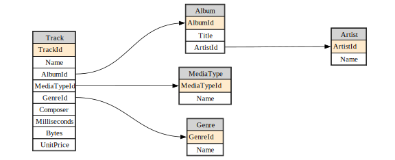

from fastlite import *
from fastcore.utils import *
from fastcore.net import urlsavefastlite
A bit of extra usability for sqlite
fastlite provides some little quality-of-life improvements for interactive use of the wonderful sqlite-utils library. It’s likely to be particularly of interest to folks using Jupyter.
Install
pip install fastliteOverview
We demonstrate fastlite‘s features here using the ’chinook’ sample database.
url = 'https://github.com/lerocha/chinook-database/raw/master/ChinookDatabase/DataSources/Chinook_Sqlite.sqlite'
path = Path('chinook.sqlite')
if not path.exists(): urlsave(url, path)
db = database("chinook.sqlite")Databases have a t property that lists all tables:
dt = db.t
dtAlbum, Artist, Customer, Employee, Genre, Invoice, InvoiceLine, MediaType, Playlist, PlaylistTrack, TrackYou can use this to grab a single table…:
artist = dt.artists
artist<Table artists (does not exist yet)>artist = dt.Artist
artist<Table Artist (ArtistId, Name)>…or multiple tables at once:
dt['Artist','Album','Track','Genre','MediaType'][<Table Artist (ArtistId, Name)>,
<Table Album (AlbumId, Title, ArtistId)>,
<Table Track (TrackId, Name, AlbumId, MediaTypeId, GenreId, Composer, Milliseconds, Bytes, UnitPrice)>,
<Table Genre (GenreId, Name)>,
<Table MediaType (MediaTypeId, Name)>]It also provides auto-complete in Jupyter, IPython, and nearly any other interactive Python environment:

You can check if a table is in the database already:
'Artist' in dtTrueColumn work in a similar way to tables, using the c property:
ac = artist.c
acArtistId, NameAuto-complete works for columns too:

Columns, tables, and view stringify in a format suitable for including in SQL statements. That means you can use auto-complete in f-strings.
qry = f"select * from {artist} where {ac.Name} like 'AC/%'"
print(qry)select * from "Artist" where "Artist"."Name" like 'AC/%'You can view the results of a select query using q:
db.q(qry)[{'ArtistId': 1, 'Name': 'AC/DC'}]Views can be accessed through the v property:
album = dt.Album
acca_sql = f"""select {album}.*
from {album} join {artist} using (ArtistId)
where {ac.Name} like 'AC/%'"""
db.create_view("AccaDaccaAlbums", acca_sql, replace=True)
acca_dacca = db.q(f"select * from {db.v.AccaDaccaAlbums}")
acca_dacca[{'AlbumId': 1,
'Title': 'For Those About To Rock We Salute You',
'ArtistId': 1},
{'AlbumId': 4, 'Title': 'Let There Be Rock', 'ArtistId': 1}]Dataclass support
A dataclass type with the names, types, and defaults of the tables is created using dataclass():
album_dc = album.dataclass()Let’s try it:
album_obj = album_dc(**acca_dacca[0])
album_objAlbum(AlbumId=1, Title='For Those About To Rock We Salute You', ArtistId=1)You can get the definition of the dataclass using fastcore’s dataclass_src – everything is treated as nullable, in order to handle auto-generated database values:
src = dataclass_src(album_dc)
hl_md(src, 'python')@dataclass
class Album:
AlbumId: int | None = None
Title: str | None = None
ArtistId: int | None = NoneBecause dataclass() is dynamic, you won’t get auto-complete in editors like vscode – it’ll only work in dynamic environments like Jupyter and IPython. For editor support, you can export the full set of dataclasses to a module, which you can then import from:
create_mod(db, 'db_dc')from db_dc import Track
Track()Track(TrackId=None, Name=None, AlbumId=None, MediaTypeId=None, GenreId=None, Composer=None, Milliseconds=None, Bytes=None, UnitPrice=None)Indexing into a table does a query on primary key:
dt.Track[1]Track(TrackId=1, Name='For Those About To Rock (We Salute You)', AlbumId=1, MediaTypeId=1, GenreId=1, Composer='Angus Young, Malcolm Young, Brian Johnson', Milliseconds=343719, Bytes=11170334, UnitPrice=0.99)There’s a shortcut to select from a table – just call it as a function. If you’ve previously called dataclass(), returned iterms will be constructed using that class by default. There’s lots of params you can check out, such as limit:
album(limit=2)[Album(AlbumId=1, Title='For Those About To Rock We Salute You', ArtistId=1),
Album(AlbumId=2, Title='Balls to the Wall', ArtistId=2)]Pass a truthy value as with_pk and you’ll get tuples of primary keys and records:
album(with_pk=1, limit=2)[(1,
Album(AlbumId=1, Title='For Those About To Rock We Salute You', ArtistId=1)),
(2, Album(AlbumId=2, Title='Balls to the Wall', ArtistId=2))]Indexing also uses the dataclass by default:
album[5]Album(AlbumId=5, Title='Big Ones', ArtistId=3)If you set xtra fields, then indexing is also filtered by those. As a result, for instance in this case, nothing is returned since album 5 is not created by artist 1:
album.xtra(ArtistId=1)
try: album[5]
except NotFoundError: print("Not found")Not foundThe same filtering is done when using the table as a callable:
album()[Album(AlbumId=1, Title='For Those About To Rock We Salute You', ArtistId=1),
Album(AlbumId=4, Title='Let There Be Rock', ArtistId=1)]Core design
The following methods accept **kwargs, passing them along to the first dict param:
createtransformtransform_sqlupdateinsertupsertlookup
We can access a table that doesn’t actually exist yet:
cats = dt.cats
cats<Table cats (does not exist yet)>We can use keyword arguments to now create that table:
cats.create(id=int, name=str, weight=float, uid=int, pk='id')
hl_md(cats.schema, 'sql')CREATE TABLE [cats] (
[id] INTEGER PRIMARY KEY,
[name] TEXT,
[weight] FLOAT,
[uid] INTEGER
)It we set xtra then the additional fields are used for insert, update, and delete:
cats.xtra(uid=2)
cat = cats.insert(name='meow', weight=6)The inserted row is returned, including the xtra ‘uid’ field.
cat{'id': 1, 'name': 'meow', 'weight': 6.0, 'uid': 2}Using ** in update here doesn’t actually achieve anything, since we can just pass a dict directly – it’s just to show that it works:
cat['name'] = "moo"
cat['uid'] = 1
cats.update(**cat)
cats()[{'id': 1, 'name': 'moo', 'weight': 6.0, 'uid': 2}]Attempts to update or insert with xtra fields are ignored.
An error is raised if there’s an attempt to update a record not matching xtra fields:
cats.xtra(uid=1)
try: cats.update(**cat)
except NotFoundError: print("Not found")Not foundThis all also works with dataclasses:
cats.xtra(uid=2)
cats.dataclass()
cat = cats[1]
catCats(id=1, name='moo', weight=6.0, uid=2)cats.drop()
cats<Table cats (does not exist yet)>Alternatively, you can create a table from a class. If it’s not already a dataclass, it will be converted into one. In either case, the dataclass will be created (or modified) so that None can be passed to any field (this is needed to support fields such as automatic row ids).
class Cat: id:int; name:str; weight:float; uid:intcats = db.create(Cat)hl_md(cats.schema, 'sql')CREATE TABLE [cat] (
[id] INTEGER PRIMARY KEY,
[name] TEXT,
[weight] FLOAT,
[uid] INTEGER
)cat = Cat(name='咪咪', weight=9)
cats.insert(cat)Cat(id=1, name='咪咪', weight=9.0, uid=None)cats.drop()Manipulating data
We try to make the following methods as flexible as possible. Wherever possible, they support Python dictionaries, dataclasses, and classes.
.insert()
Creates a record. Returns an instance of the updated record.
Insert using a dictionary.
cats.insert({'name': 'Rex', 'weight': 12.2})Cat(id=1, name='Rex', weight=12.2, uid=UNSET)Insert using a dataclass.
CatDC = cats.dataclass()
cats.insert(CatDC(name='Tom', weight=10.2))Cat(id=2, name='Tom', weight=10.2)Insert using a standard Python class
cat = cats.insert(Cat(name='Jerry', weight=5.2)).update()
Updates a record using a Python dict, dataclass, or object, and returns an instance of the updated record.
Updating from a Python dict:
cats.update(dict(id=cat.id, name='Jerry', weight=6.2))Cat(id=3, name='Jerry', weight=6.2)Updating from a dataclass:
cats.update(CatDC(id=cat.id, name='Jerry', weight=6.3))Cat(id=3, name='Jerry', weight=6.3)Updating using a class:
cats.update(Cat(id=cat.id, name='Jerry', weight=5.7))Cat(id=3, name='Jerry', weight=5.7).delete()
Removing data is done by providing the primary key value of the record.
# Farewell Jerry!
cats.delete(cat.id)<Table cat (id, name, weight)>Multi-field primary keys
Pass a collection of strings to create a multi-field pk:
class PetFood: catid:int; food:str; qty:int
petfoods = db.create(PetFood, pk=['catid','food'])
print(petfoods.schema)CREATE TABLE [pet_food] (
[catid] INTEGER,
[food] TEXT,
[qty] INTEGER,
PRIMARY KEY ([catid], [food])
)You can index into these using multiple values:
pf = petfoods.insert(PetFood(1, 'tuna', 2))
petfoods[1,'tuna']PetFood(catid=1, food='tuna', qty=2)Updates work in the usual way:
pf.qty=3
petfoods.update(pf)PetFood(catid=1, food='tuna', qty=3)You can also use upsert to update if the key exists, or insert otherwise:
pf.qty=1
petfoods.upsert(pf)
petfoods()[PetFood(catid=1, food='tuna', qty=1)]pf.food='salmon'
petfoods.upsert(pf)
petfoods()[PetFood(catid=1, food='tuna', qty=1), PetFood(catid=1, food='salmon', qty=1)]delete takes a tuple of keys:
petfoods.delete((1, 'tuna'))
petfoods()[PetFood(catid=1, food='salmon', qty=1)]Diagrams
If you have graphviz installed, you can create database diagrams. Pass a subset of tables to just diagram those. You can also adjust the size and aspect ratio.
diagram(db.t['Artist','Album','Track','Genre','MediaType'], size=8, ratio=0.4)
Importing CSV/TSV/etc
Database.import_file
def import_file(
table_name, file, format:NoneType=None, pk:NoneType=None, alter:bool=False
):
Import path or handle file to new table table_name
You can pass a file name, string, bytes, or open file handle to import_file to import a CSV:
db = Database(":memory:")
csv_data = """id,name,age
1,Alice,30
2,Bob,25
3,Charlie,35"""
table = db.import_file("people", csv_data)
table()[{'id': 1, 'name': 'Alice', 'age': 30},
{'id': 2, 'name': 'Bob', 'age': 25},
{'id': 3, 'name': 'Charlie', 'age': 35}]